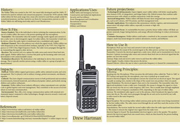

|

Infographic Project
|
While completing this assignment I learned how to use InDesign to create a graphic that is informative to the audience. I chose to write mine on the Walkie Talkie. Throughout the project I had to decide how much information to put on. Then I had to figure out how I wanted to format the text to make everything look equal, at least for the most part. After that I decided I was going to figure out the colors of my graphic, I did not want something too bright that might take away from the information so I went for a tan. Then I found a picture for an example of a walkie talkie and uploaded that onto my graphic. All the information on my graphic was found from different websites that were able to give me the history, use, and functions for walkie talkies. |